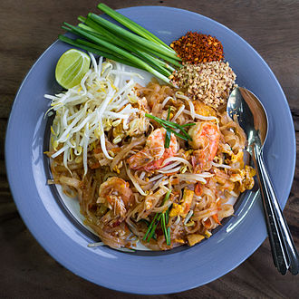

Home
Pad Thai

I remember the first Pad Thai I'd ever had, it was with my first girlfriend after watching an episode of The Big Bang Theory.
My mother had recommended a resturant a few minutes walk.
Immediately I was blown away by the combination of tastes and textures and has since held a place as one of my all time favourite meals
You can absolutely ensure yourself in the 2 months I spent travelling Thailand, Pad Thai was a staple of my diet.
- Yields: 4 servings
- Prep time: 20 minutes
- Cook time: 15 minutes
Ingredients
- 450g rice noodles
- 250g protein of your choice (e.g., chicken, pork, tofu, shrimp)
- 2 large eggs
- 1 tablespoon tamarind paste
- 2 tablespoons fish sauce
- 1 tablespoon sugar
- 1 tablespoon lime juice
- 1/2 cup chopped peanuts
- 1/4 cup chopped green onions
- 1/4 cup chopped cilantro
- 2 tablespoons vegetable oil
Preparation
- Prepare noodles: Soak rice noodles in cold water for 30 minutes or according to package instructions. Drain and set aside.
- Make the sauce: In a small bowl, combine tamarind paste, fish sauce, sugar, and lime juice. Stir until well combined.
- Cook the protein: Heat vegetable oil in a large skillet over medium-high heat. Add protein and cook until cooked through. Remove from skillet and set aside.
- Scramble the eggs: Add remaining oil to the skillet and cook eggs scrambled until set. Remove from skillet and set aside.
- Combine ingredients: Return skillet to medium heat. Add noodles, shrimp (or tofu), eggs, and sauce. Toss to coat. Cook for 2-3 minutes or until noodles are heated through.
- Serve: Garnish with peanuts, green onions, and cilantro. Serve immediately.
Tips
- For a spicier dish, add a pinch of red pepper flakes.
- You can also add other vegetables like bean sprouts or carrots to the dish for added nutrition and flavor.